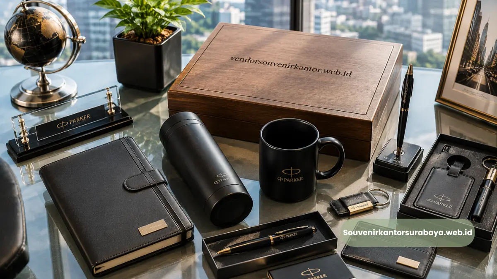
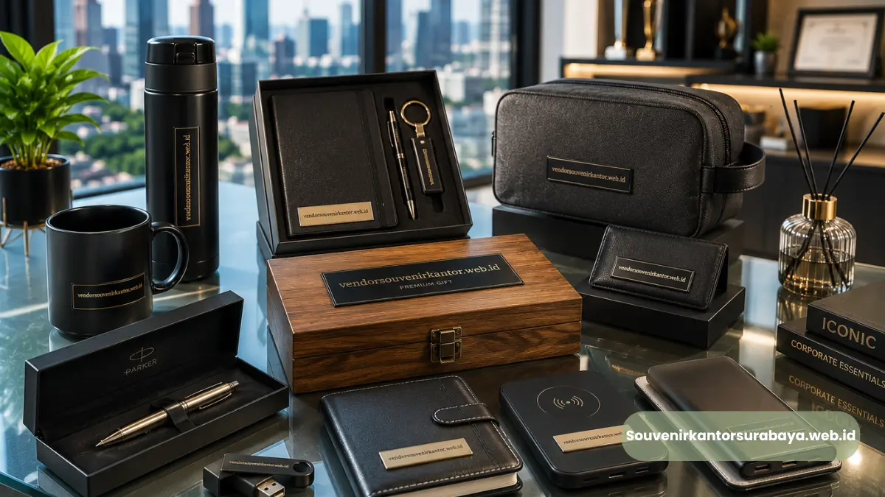

- Mengapa Momen Penandatanganan Kerja Sama Cocok untuk Souvenir Ini?
- Bagaimana Souvenir Ini Digunakan sebagai Bentuk Penghargaan Karyawan?
- Apakah Kunjungan Bisnis dari Mitra Luar Kota Menjadi Momen yang Tepat?
- Bagaimana Perayaan Hari Jadi Perusahaan Dapat Memanfaatkan Souvenir Ini?
- Mengapa Ketepatan Momen Memengaruhi Kesan Souvenir yang Diberikan?
Momen tepat memberikan pulpen Parker ukir nama perusahaan umumnya berkaitan dengan acara formal seperti penandatanganan kerja sama, penghargaan karyawan, dan kunjungan bisnis penting, di mana kesan personal dan profesional sangat dibutuhkan.
Ketepatan momen ini menentukan seberapa besar kesan mendalam yang tercipta dari souvenir yang diberikan.
- Momen formal seperti penandatanganan kontrak menjadi waktu yang paling relevan untuk souvenir ini.
- Penghargaan karyawan atas pencapaian tertentu juga menjadi konteks yang tepat.
- Kunjungan bisnis dan perayaan hari jadi perusahaan turut menjadi momentum yang sesuai.
- Ketepatan momen memperkuat makna simbolis dari souvenir yang diberikan.
Mengapa Momen Penandatanganan Kerja Sama Cocok untuk Souvenir Ini?
Momen penandatanganan kerja sama cocok untuk pemberian pulpen Parker ukir nama perusahaan karena secara simbolis merepresentasikan alat yang digunakan pada momen tersebut sekaligus menjadi kenang-kenangan formal dari kesepakatan yang terjalin.
Ketika dua perusahaan menyepakati kerja sama, momen penandatanganan dokumen menjadi puncak dari proses negosiasi yang telah berlangsung.
Memberikan pulpen Parker ukir nama perusahaan pada momen ini menciptakan keterkaitan makna antara alat yang digunakan dan hasil kesepakatan itu sendiri, sehingga souvenir terasa lebih relevan dibanding pemberian di waktu yang tidak berkaitan langsung dengan konteks acara.
Bagaimana Souvenir Ini Digunakan sebagai Bentuk Penghargaan Karyawan?

Souvenir pulpen Parker ukir nama perusahaan digunakan sebagai bentuk penghargaan karyawan pada momen seperti pencapaian target, masa kerja tertentu, atau promosi jabatan, di mana penghargaan simbolis dianggap lebih berkesan dibanding insentif yang bersifat sementara.
Pemberian penghargaan berupa barang premium yang dipersonalisasi memberikan nilai emosional yang berbeda dibanding bonus finansial semata.
Karyawan cenderung menyimpan barang tersebut sebagai kenang-kenangan atas pencapaian yang telah diraih, sehingga dampaknya terhadap motivasi dan loyalitas dapat bertahan lebih lama dibanding bentuk apresiasi lain yang sifatnya habis pakai.
Baca Juga
Apakah Kunjungan Bisnis dari Mitra Luar Kota Menjadi Momen yang Tepat?
Kunjungan bisnis dari mitra luar kota atau luar negeri menjadi momen yang tepat untuk memberikan pulpen Parker ukir nama perusahaan karena mencerminkan keramahan sekaligus profesionalisme perusahaan tuan rumah kepada tamu yang berkunjung.
Pada kunjungan formal semacam ini, memberikan souvenir yang dipersonalisasi menunjukkan perhatian terhadap detail sekaligus memberikan kesan bahwa kunjungan tersebut dihargai secara khusus.
Souvenir yang ringkas namun elegan seperti pulpen juga praktis dibawa oleh tamu yang harus melakukan perjalanan kembali ke lokasi asal mereka.
Bagaimana Perayaan Hari Jadi Perusahaan Dapat Memanfaatkan Souvenir Ini?
Perayaan hari jadi perusahaan dapat memanfaatkan pulpen Parker ukir nama perusahaan sebagai simbol perjalanan dan pencapaian perusahaan, yang dibagikan kepada karyawan, klien, maupun mitra sebagai bentuk apresiasi atas dukungan yang telah diberikan.
Momentum hari jadi sering kali dijadikan kesempatan bagi perusahaan untuk merefleksikan perjalanan bisnis sekaligus mempererat hubungan dengan berbagai pihak yang telah berkontribusi.
Souvenir dengan ukiran nama perusahaan pada momen ini dapat menjadi pengingat visual yang bermakna, terutama jika turut mencantumkan elemen seperti tahun berdirinya perusahaan.
Mengapa Ketepatan Momen Memengaruhi Kesan Souvenir yang Diberikan?
Ketepatan momen memengaruhi kesan souvenir karena konteks pemberian menentukan relevansi emosional dan simbolis dari barang yang diterima, sehingga souvenir yang diberikan pada waktu yang tepat cenderung lebih diingat dibanding pemberian tanpa konteks jelas.
Sebuah barang yang sama dapat memiliki makna sangat berbeda tergantung kapan dan dalam situasi apa ia diberikan.
Pulpen yang diberikan tepat setelah penandatanganan kontrak besar akan selalu diasosiasikan dengan momen keberhasilan tersebut, berbeda dengan pulpen yang diberikan tanpa kaitan acara tertentu.
Oleh karena itu, perencanaan waktu pemberian souvenir menjadi bagian penting dari strategi corporate gifting yang efektif.
Untuk memastikan souvenir Anda siap tepat waktu pada momen-momen penting tersebut, Anda dapat mempercayakan kebutuhan pengadaan pulpen Parker ukir nama perusahaan kepada tim souvenirkantorsurabaya.web.id yang berpengalaman menangani berbagai acara korporat.
Kesimpulan
Momen tepat memberikan pulpen Parker ukir nama perusahaan mencakup berbagai konteks strategis, mulai dari penandatanganan kerja sama, penghargaan karyawan, kunjungan bisnis, hingga perayaan hari jadi perusahaan.
Ketepatan momen ini menjadi faktor penting yang memperkuat makna simbolis souvenir di mata penerimanya.
Untuk memastikan souvenir Anda siap pada momen yang tepat, segera konsultasikan kebutuhan Anda bersama souvenirkantorsurabaya.web.id

Hawa Nadira
Tim penulis CorporateGifts ID berfokus pada strategi souvenir kantor, merchandise korporat, dan inovasi brand untuk klien B2B.
Keahlian: Branding perusahaan, produksi souvenir, paket event, desain materi promosi.
Artikel Terkait

Pulpen Parker Ukir Nama Perusahaan
Solusi premium untuk souvenir perusahaan dan hadiah eksklusif.
Baca Selengkapnya
Merchandise Perusahaan untuk Promosi Bisnis
Ide merchandise korporat yang efektif untuk meningkatkan visibilitas brand dan impresi profesional.
Baca Selengkapnya
Ide Souvenir Kantor
Pilihan souvenir kantor dengan sentuhan branding yang membuat acara perusahaan semakin berkesan.
Baca Selengkapnya